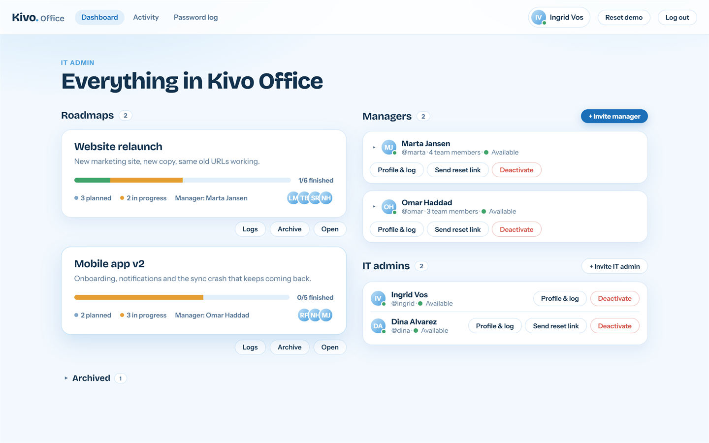
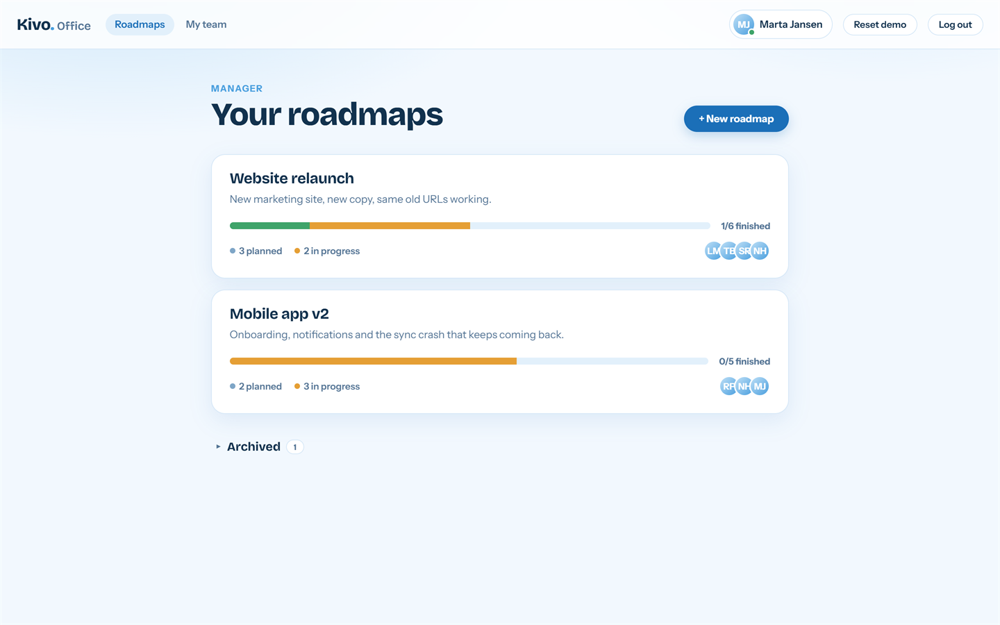
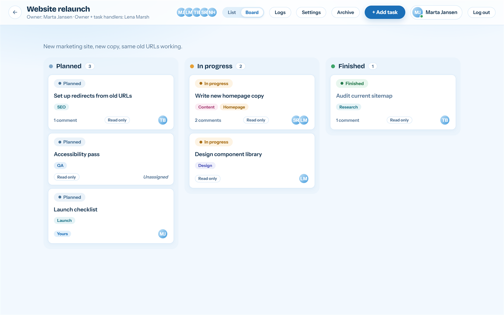
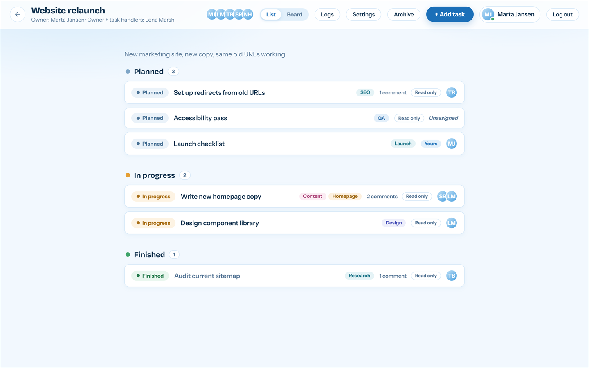
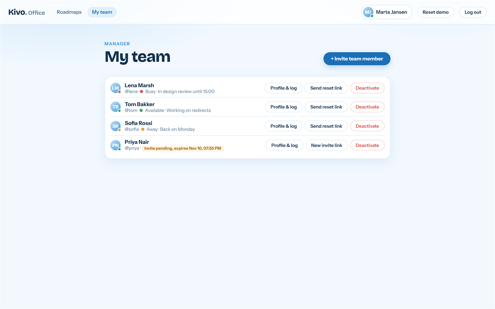
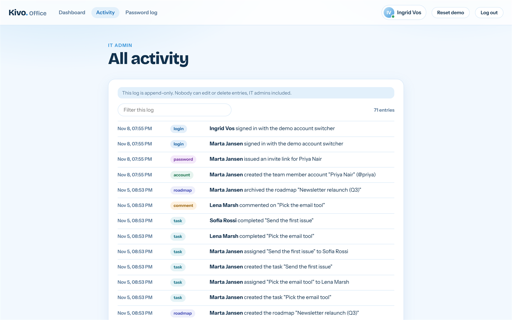
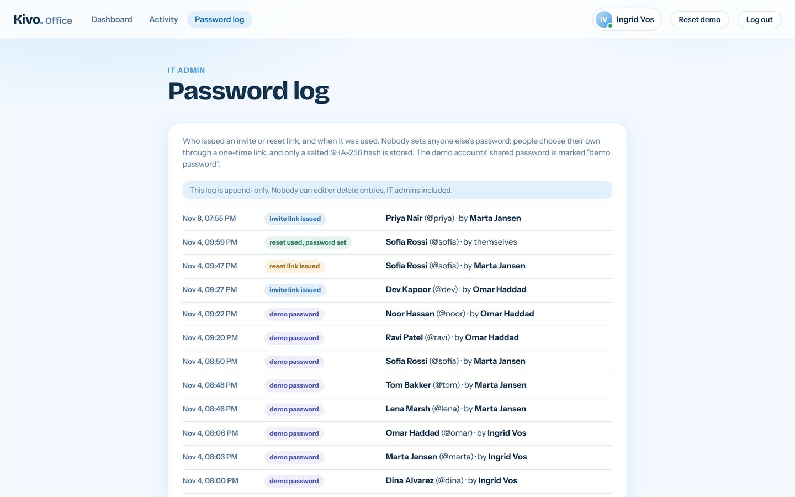
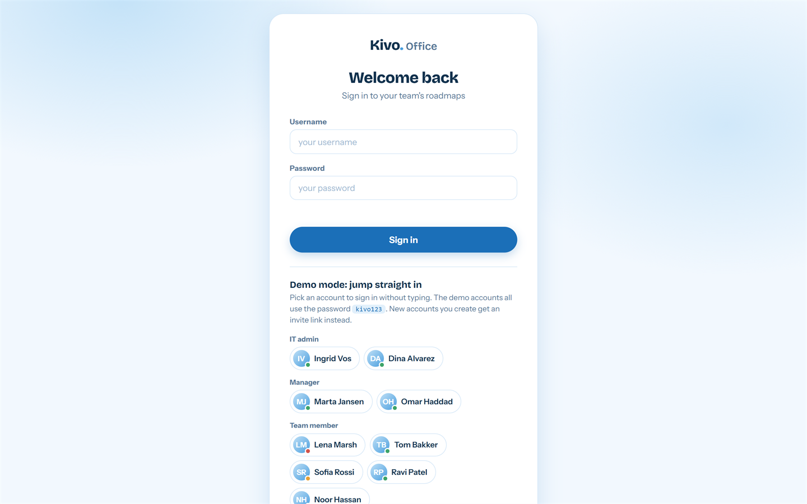

project
Kivo Office is a version of Kivo Roadmap made for companies. IT invites the managers, managers invite their team and run the roadmaps, and everyone works on the tasks assigned to them.

Kivo Office takes my Kivo Roadmap and turns it into something a whole company can use instead of Trello. There are three kinds of accounts: IT admins look after everything, managers make roadmaps and decide who works on what, and team members work on their own tasks and comment on the rest.
Everything that happens gets written to a log that nobody can change, and accounts are never deleted. When someone leaves they get deactivated, so the history always stays complete.
I made this with a lot of help from AI. I came up with the idea and what it should do, and kept testing and tweaking it until it worked how i wanted.
It's a small Node JS + Express server with SQLite, and a frontend in plain HTML, CSS and Javascript. One install is for one company.
screenshots
First finished build is being used by my dad's company for testing.






